Illustrated index: artwork and page features
Find the compasses cover, spirals, branches, insects, dots, and recurring marks by sight.
On this page
Find a page by what you remember seeing. The LP2 group names below follow the community index; they are browsing labels, not translated chapter titles or proof that each group uses one cipher. Image previews are cropped browsing aids. Select a page to inspect its complete original.
Compasses and William Blake
The illustrated 1033.jpg cover predates the numbered manuscript releases. Its collage includes details identified with Newton, The Ancient of Days, and Nebuchadnezzar. It has its own original file and hidden-message record.

Leafy border on the Welcome pages · LP1-03–04
Thick branches and leaf shapes enclose both Welcome pages. The illustrated border guide compares their layout and enlarges the small red instruction at the bottom of LP1-04. Page records: LP1-03 · LP1-04.
Bearded figure and scroll-like frame · LP1-06–09
The four pages of the first koan share a tall rectangular frame topped by a central bearded figure. Spiral ornaments flank the figure near the shoulders; the bottom has a shaded, uneven edge and curled sides. These visible features help locate the group without assuming that the figure depicts the dialogue’s master or a particular historical person.
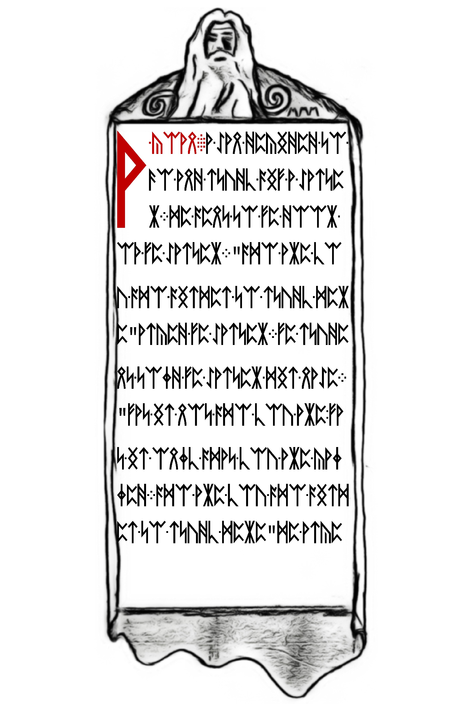
[500, 0, 1400, 650]. Complete sheet · Original JPEG.Page records: LP1-06 · LP1-07 · LP1-08 · LP1-09. The last page adds a left-facing insect between the dialogue and instruction. Compare the two koans and their arguments separately from an artwork-source attribution.
Hooded figures · LP1-10–13
Across LP1-10, LP1-11, LP1-12, and LP1-13, two long hooded figures flank a rectangular text panel. Their faces are visible near the top, where sweeping curves join the decoration. Looped forms continue below the panel. These are visible features; no identity or source artwork is established here.

On LP1-13, a separate profile insect sits between the upper text and the next passage. The reading map explains how this page concludes The Loss of Divinity and adds separate advice and an instruction. The artwork and the decoded wording can be examined together without assuming that one explains the other.
Dots and punctuation
Compare large separated dots and small punctuation clusters, with original page images and measured examples. The five-dot location table distinguishes LP2-07, LP2-23 and LP2-56.
Signposts and crosses · LP2-00–02
Cross-shaped drawings frame the opening pages. Read the detailed article.
Spirals · LP2-03–07
Curled line drawings give this group its browsing name. Compare the borders and their geometry.
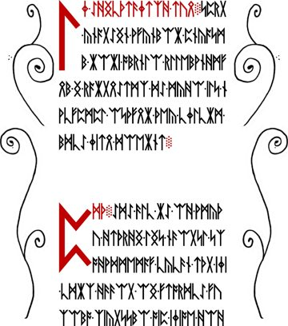
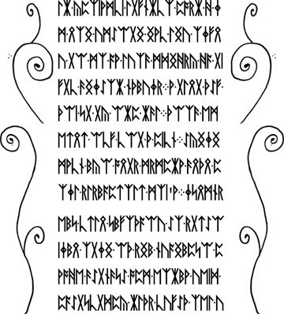
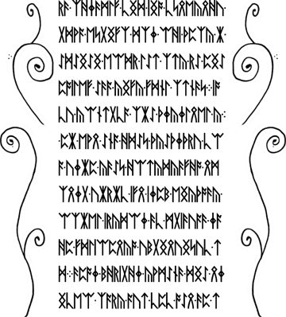
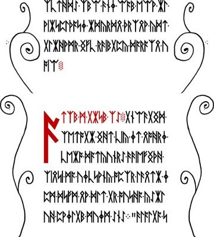

Branches · LP2-08–14
Compare the branching forms in their surrounding page layouts. Read about branches, trees, and counting conventions.
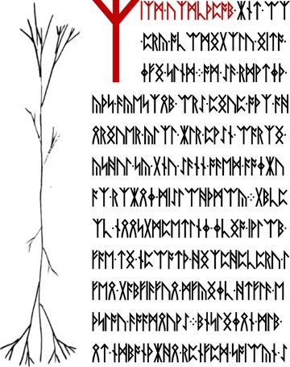
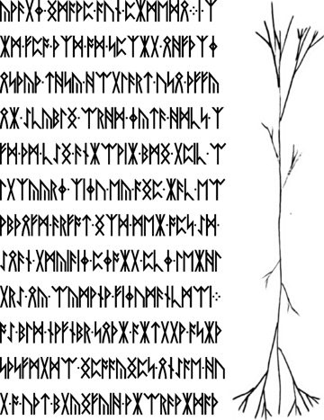
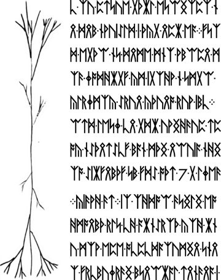
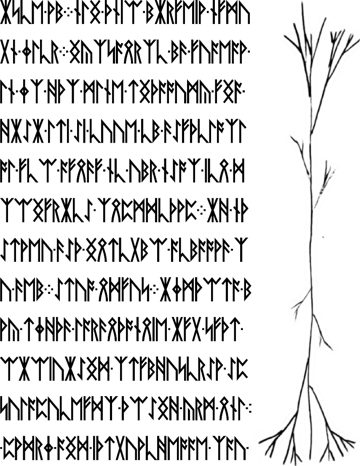
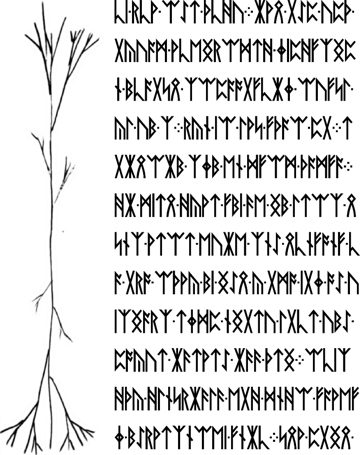
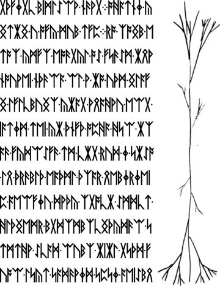

Möbius · LP2-15–22
Begin with the crossed loop and number panel on LP2-15. Read the detailed article.


Reclining figures · LP1-14–16 and LP2-22
Compare the head-left figures on LP1-14, LP1-15 and LP1-16 with the head-right figure on LP2-22. The illustrated comparison records their orientations without assuming an identity or source.
A human figure lies across the bottom of LP2-22, below a dark drawing with three crossbars. Its head is at the right and its feet at the left. See the close view and visual notes, or open the page record to inspect each feature.
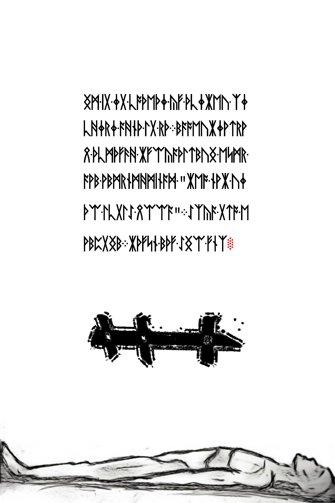
Mayfly · LP2-23–26
The insect name is a community label for this grouping. Compare the insect imagery.


Wing and tree · LP2-27–32
Inspect the illustrated pages alongside the intervening text. Follow the wing and tree endpoints.
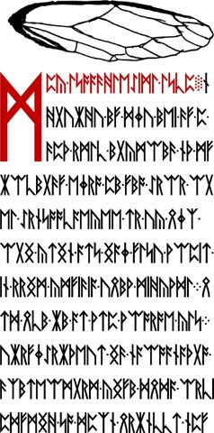
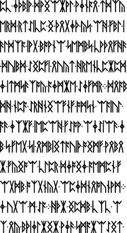
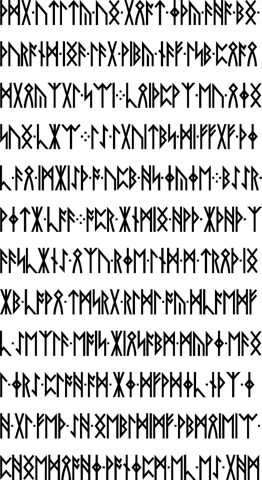
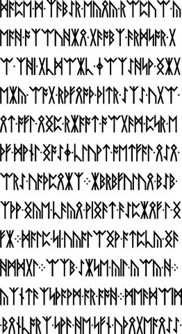
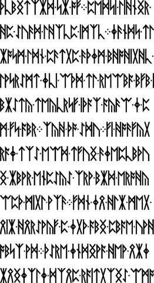
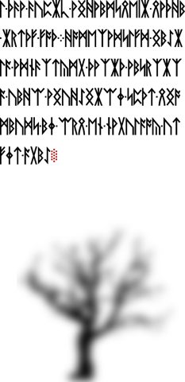
Cuneiform-like mark · LP2-33–39
The repeated mark is below the text on page 33 and above it on pages 34–39. Read the detailed article.


Spiral branches · LP2-40–53
The community groups these fourteen pages under a shared visual name. Compare the branching borders.
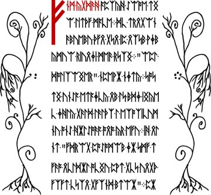
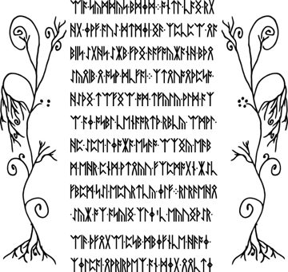
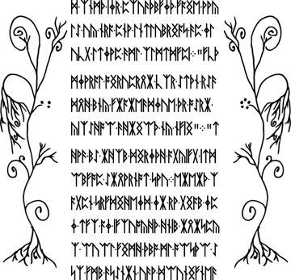
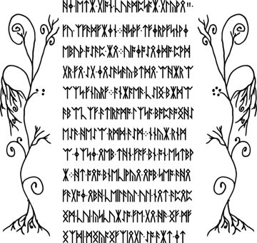
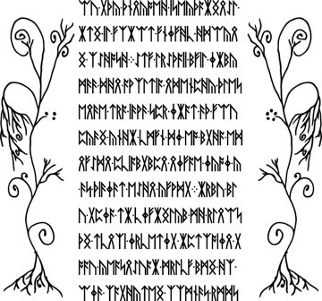
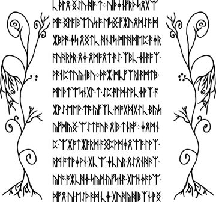
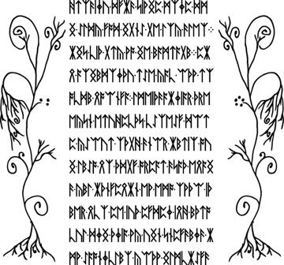
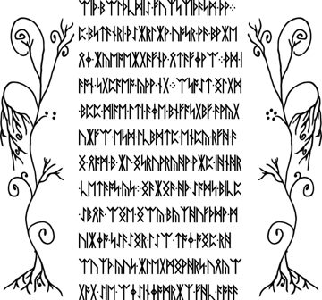
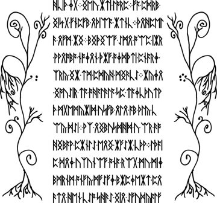
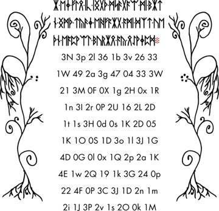
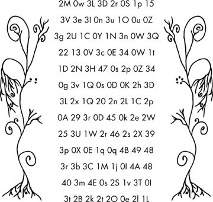
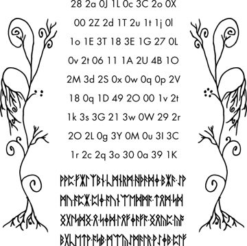
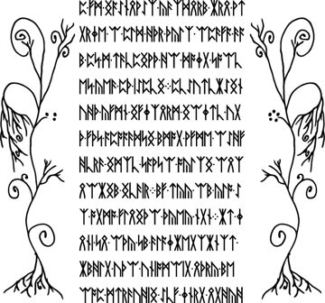

Letter-and-number grids on LP2-49–51
The three plant-bordered sheets contain 256 two-character entries across 32 rows. The alphanumeric-grid guide compares their layouts, explains case-sensitive transcription, and provides a reproducible count.
Spiral and dead tree · LP2-54–55
The final illustrated pair before the two known LP2 readings. Inspect the pale tree on LP2-55.

The final two LP2 pages
LP2-56’s deep-web hash and LP2-57’s parable have known readings in the source compilation.

Names, coverage, and sources
Cicada Solvers’ LP2 index supplies the community section names and ranges. The page links above provide original images, checksums, and pinned archive sources. Section names are descriptive navigation labels, not decrypted headings.
For the first release, browse known readings by section or all LP1 pages. Detailed visual measurements currently cover a smaller subset than this browsing index.
For red headings, numbers, and marks, see rubrication and color boundaries, with illustrated examples and guidance for recording a proposed extraction.
Manuscript pages discussed
LP1-13 · LP1-10 · LP1-11 · LP1-12 · LP1-06 · LP1-07 · LP1-08 · LP1-09
Guides linking here
- The LP2-15 number panel and heading
- LP2-00–02: text and image measurements
- Referenced works and possible influences
- The two koans: identity and the inner voice
- Dots and punctuation
- Möbius and the crossed-loop drawing
- Spirals and branching borders
- Branches and trees
- Insects and wing imagery
- Rubrication: red lettering, numbers, and boundaries
- Alphanumeric grids on LP2-49–51